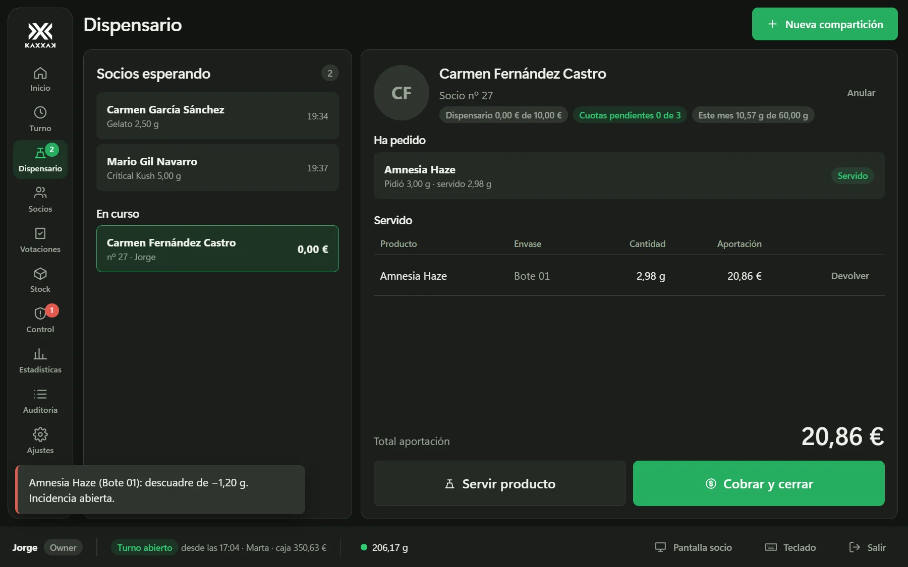

Muy pronto
Cada gramo de tu asociación, controlado por la báscula.
Socios, cuotas, stock y dispensario en un solo programa. Funciona sin internet y los datos se quedan en vuestro local.
Estamos terminando la web. Si quieres saber más o probarlo antes que nadie, escríbenos.
